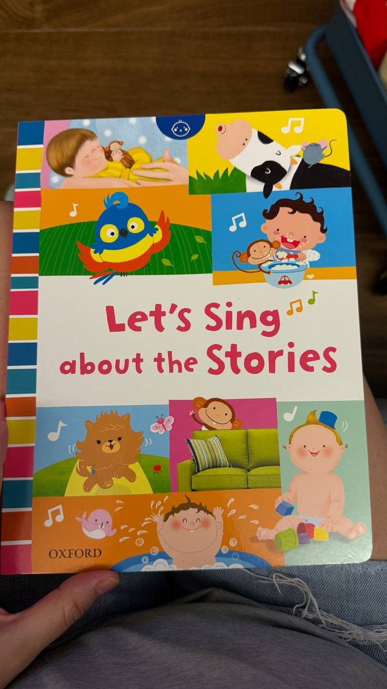
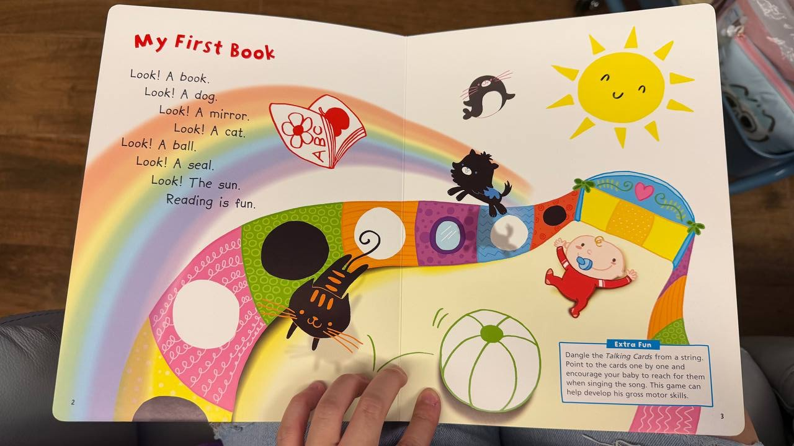
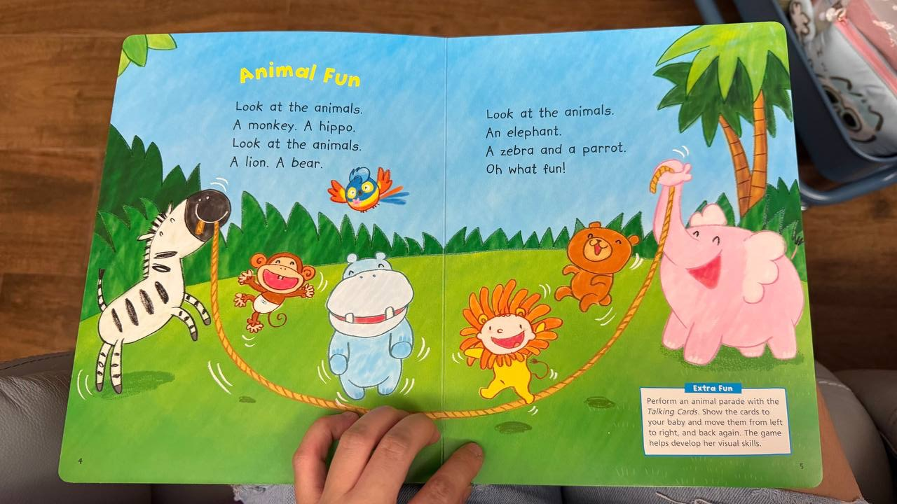
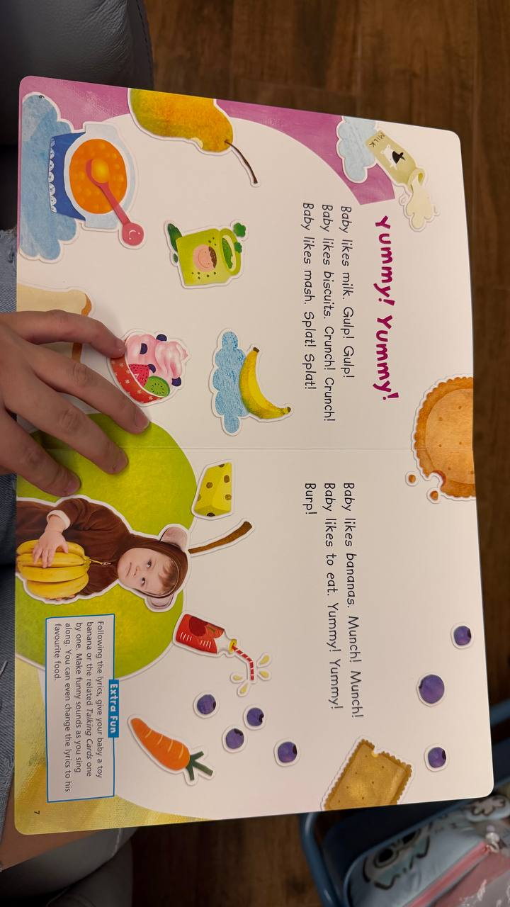
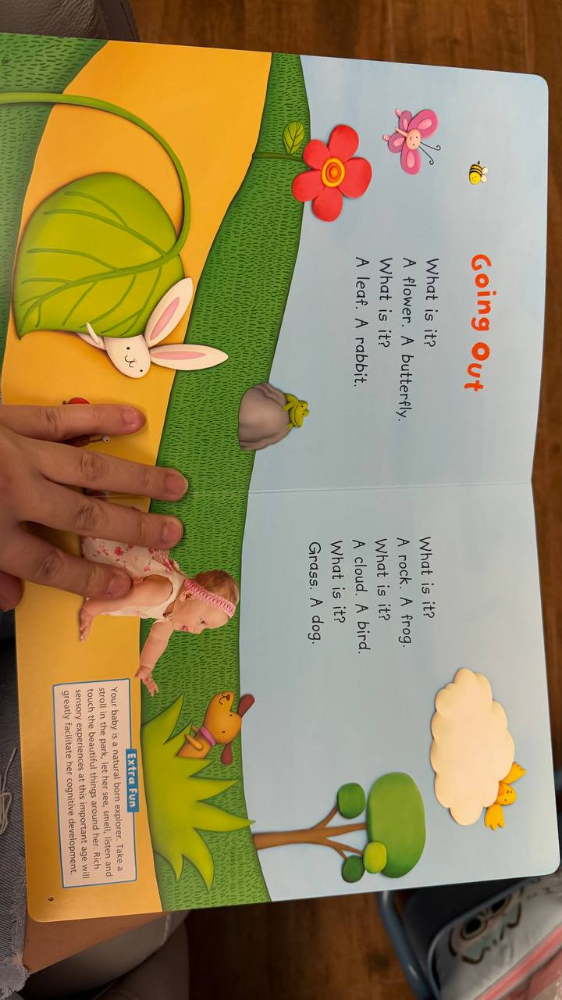
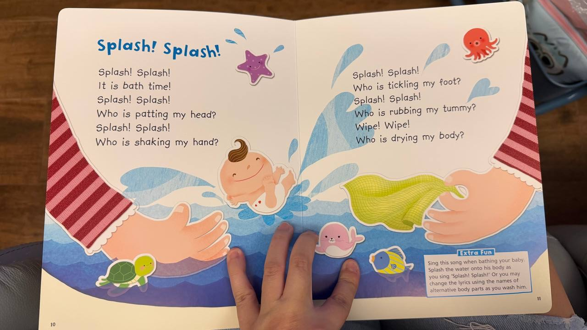
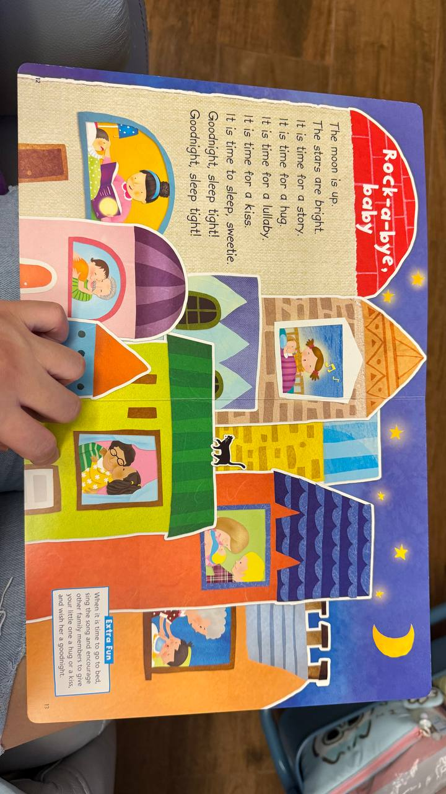
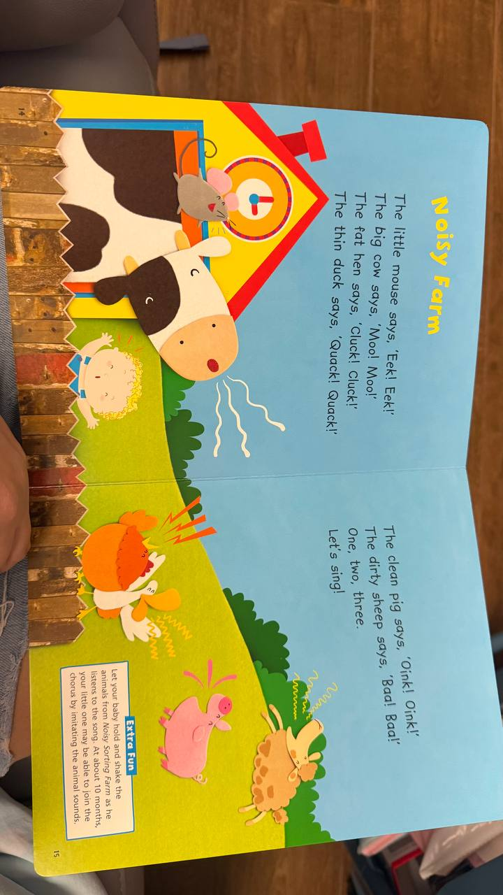
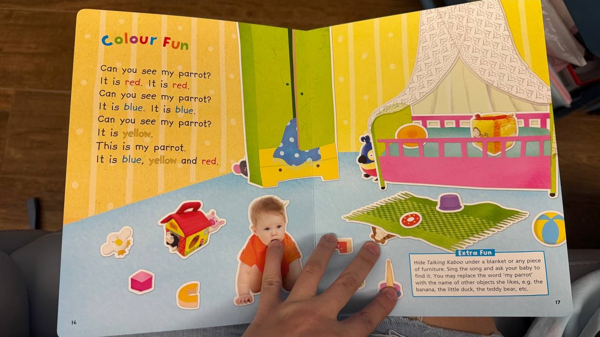
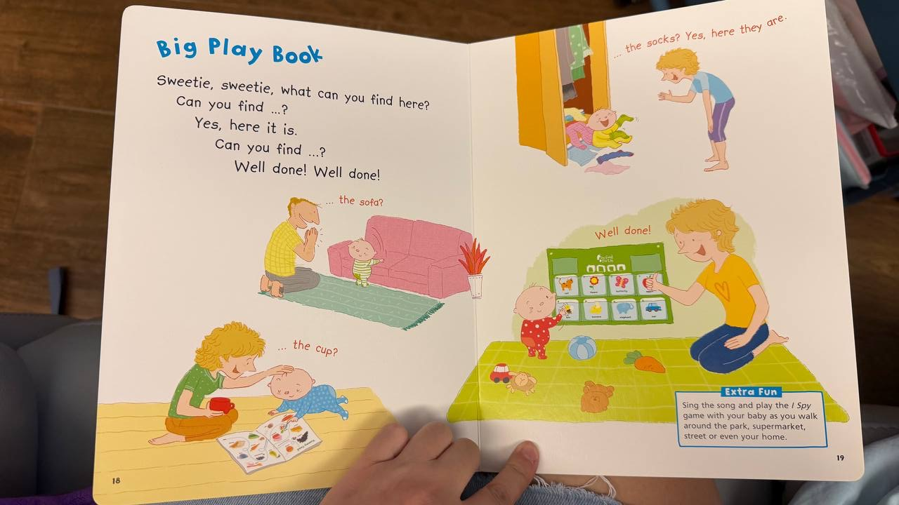

封面Let’s Sing about the Stories

內頁My First Book（Look! A book…）

內頁Animal Fun（Look at the animals…）

內頁Yummy! Yummy!（Baby likes… Yummy! Yummy!）

內頁Going Out（What is it? A…）

內頁Splash! Splash!（Splash… It is bath time!）

內頁Rock-a-bye, baby（Goodnight, sleep tight!）

內頁Noisy Farm（animal sounds）

內頁Colour Fun（Can you see… It is…）

內頁Big Play Book（Can you find… Yes… Well done!）